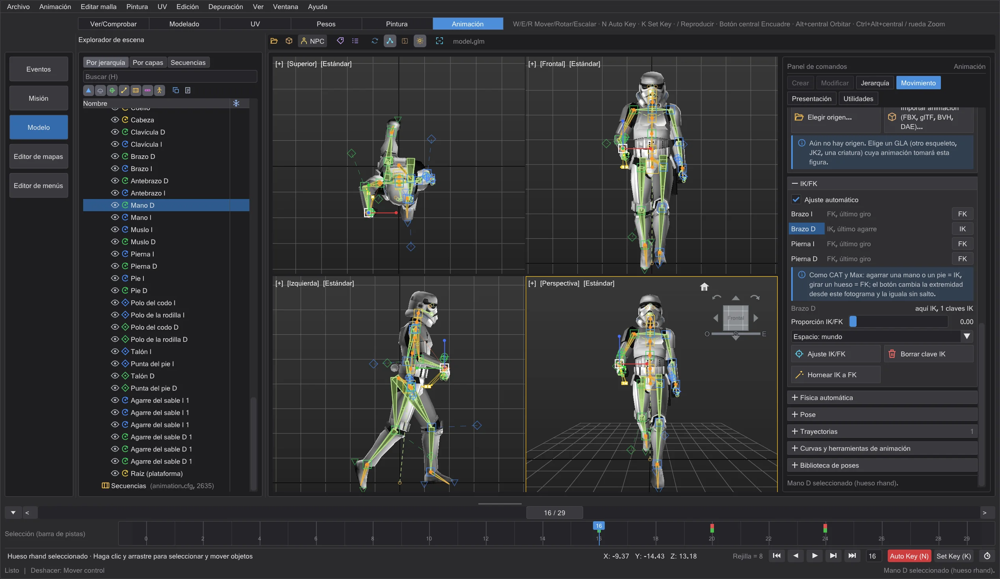
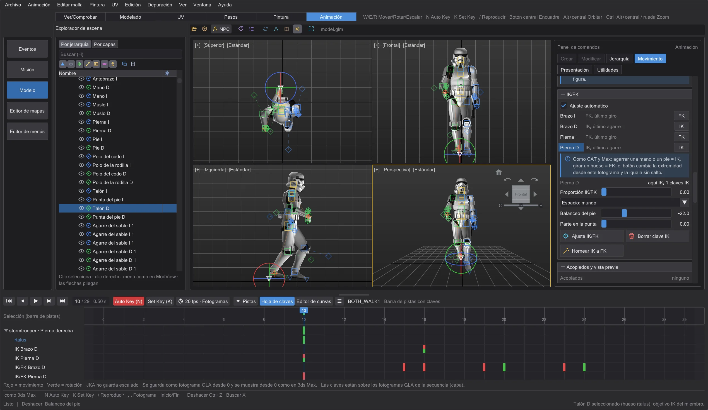
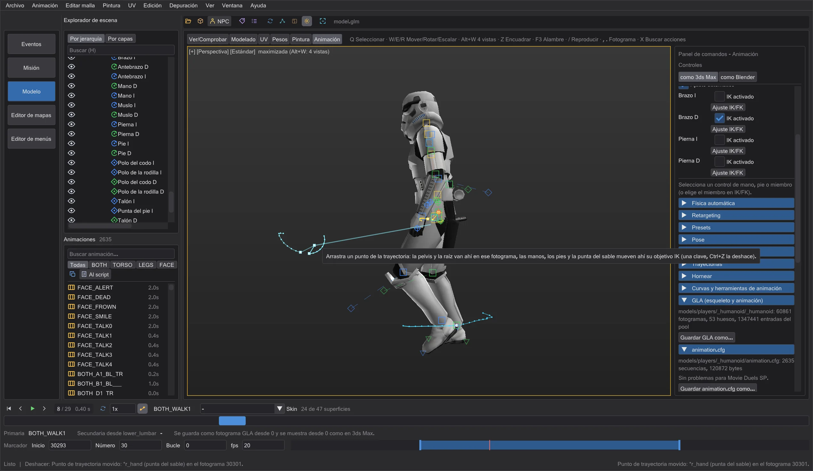
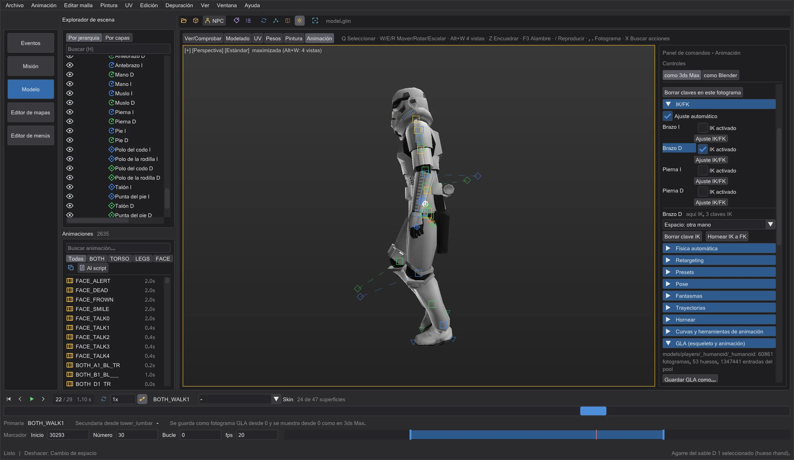

Pestaña Model: IK/FK, balanceo del pie, trayectorias y cambio de espacio
Mueve manos y pies con IK de dos huesos, cambia cada miembro entre IK y FK sin salto, balancea el pie, arrastra las trayectorias de manos, pies y punta del sable y haz que una mano siga otro espacio.

IK y FK#
Tras Crear rig cada brazo y pierna del rig tiene IK de dos huesos: el hueso final (mano, pie) alcanza su objetivo, el codo o la rodilla quedan en el plano de raíz, objetivo y objetivo de polo y apuntan al polo, la regla con la que Blender coloca su objetivo de polo y el objetivo de giro del solucionador HI de 3ds Max. Como en Blender, la IK es un cambio sobre la pose del fotograma, así se conserva el giro de los miembros de la animación. El resultado son claves FK del segmento superior, el inferior y el hueso final en la misma capa: la hoja de claves y las curvas lo muestran al instante y hornear en el GLA funciona como antes. Como 3ds Max: agarrar la mano o el pie con W es IK y el cambio es una clave; girar un segmento con E es FK. Con Ajuste automático (activado de serie) cada cambio ajusta antes el otro lado y nada salta. El panel IK/FK (se abre al seleccionar un miembro, como el panel del solucionador IK de la paleta Movimiento) tiene IK activado y Ajuste IK/FK para cada miembro. Como Blender: cada miembro tiene el deslizador IK-FK de Rigify (0 = IK, 1 = FK) y los botones IK → FK (objetivo IK y polo a la pose FK) y FK → IK (claves FK a la pose IK); primero ajusta y luego mueve el deslizador, y el miembro no salta. G mueve el objetivo IK solo en IK; si no, un mensaje dice qué hacer. Cada acción está también en el menú Animación (grupo IK/FK), en el clic derecho de la vista y del control y en la búsqueda X / F3.
Balanceo del pie#
Gira el control del talón, la planta o la punta (E como 3ds Max, R como Blender) o usa Balanceo del pie en el panel: como el control del talón de Rigify, por debajo de 0 el pie rueda hacia atrás sobre el talón y por encima de 0 hacia delante sobre la planta, mientras los dedos quedan en el suelo; Parte en la punta pone una parte del balanceo hacia delante en la punta. Los esqueletos sin huesos de los dedos (Jedi Academy _humanoid) no tienen planta: el balanceo hacia delante gira sobre la punta.

Arrastrar las trayectorias de manos, pies y punta del sable#
Añade una trayectoria para una mano o un pie (Trayectoria de la selección) o para la punta del sable unido a *r_hand (Trayectoria de la punta del sable). Un punto que arrastras en la vista pasa a ser el objetivo IK del miembro en ese fotograma, como mover claves sobre la trayectoria en 3ds Max: el punto queda bajo el ratón, el miembro recibe una clave IK y claves FK, y un Ctrl+Z deshace todo el arrastre. Arrastrar la punta del sable mueve la mano del sable lo mismo. Las trayectorias de la pelvis y la raíz mueven el hueso como antes.

Cambio de espacio#
El objetivo IK de un miembro puede seguir desde un fotograma al mundo, la pelvis, el pecho, la cabeza o la otra mano (Child Of en Blender, la restricción de vínculo en 3ds Max): elígelo en IK/FK o en el menú. El cambio escribe una clave un fotograma antes en el espacio anterior y otra en el fotograma en el nuevo, nada salta. Sable a la otra mano hace que la mano del sable siga a la otra mano, para agarres a dos manos y para pasar el sable; se vuelve con Espacio: mundo. El juego une el sable a *r_hand por código, así que la animación siempre mueve las manos.

Reducir una selección, biblioteca de poses como archivo#
Reducir fotogramas a claves funciona ahora también con Reducir solo los huesos seleccionados y Reducir solo un intervalo: las claves de fuera quedan bit a bit y cada fotograma de hueso queda dentro del límite de compresión. Guardar biblioteca en archivo escribe la biblioteca de poses en Documentos\behaved\posen y Cargar biblioteca la recupera para otro modelo u otra sesión.